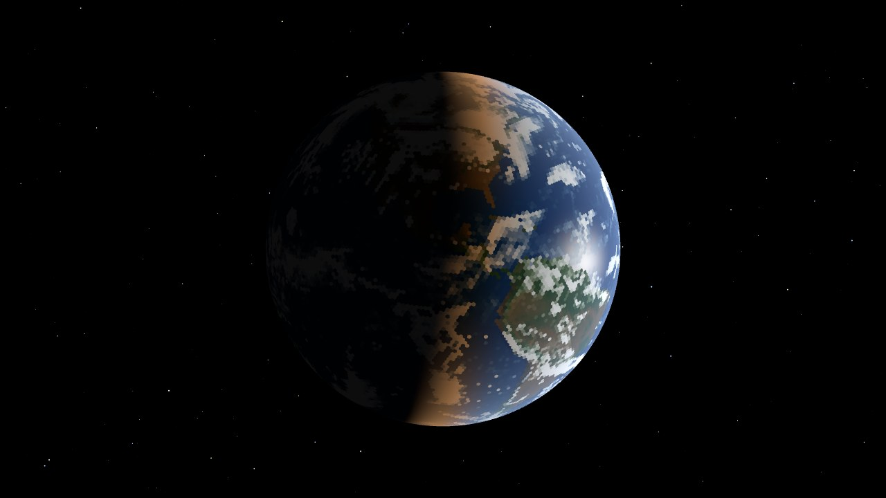
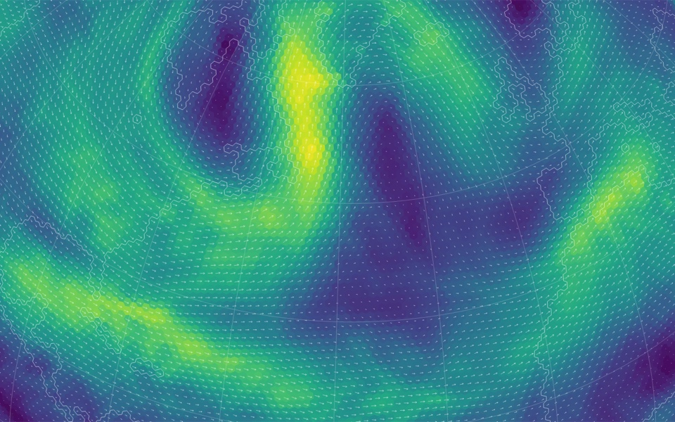
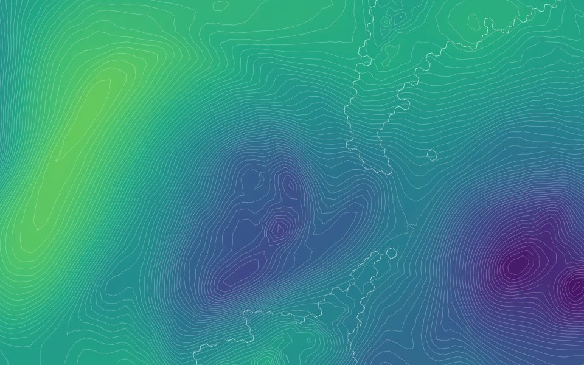
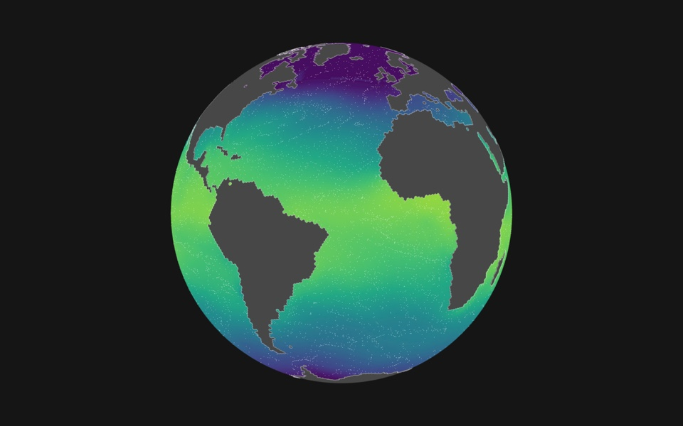
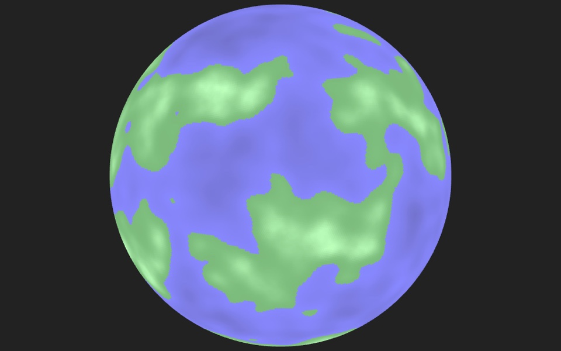
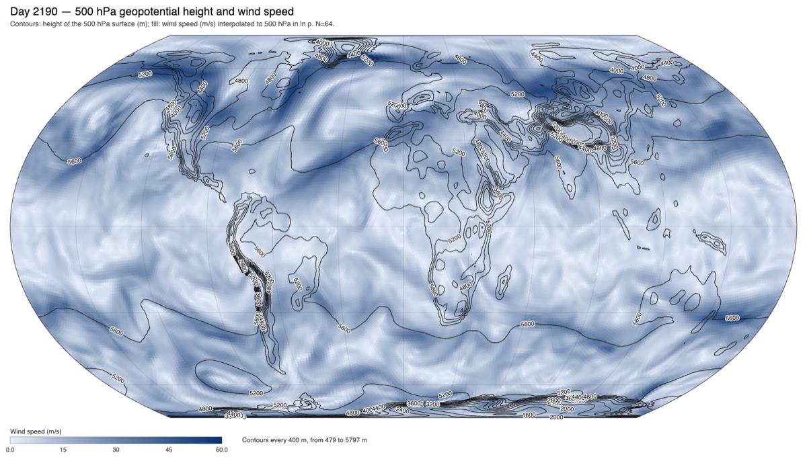

Geodesic
A planet on a hexagonal grid, simulated in your browser.

Climate model
A global climate model running live: a hydrostatic atmosphere with 27 levels on a geodesic C-grid, moist convection and clouds, a wind-driven two-layer ocean, sea ice, snow and soil on real continents with terrain. Every kernel runs on the graphics card through WebGPU. It picks up from a six-year spin-up at 64 subdivisions, about 41,000 cells 110 km across, where you can colour the globe by wind, temperature, pressure, rain, clouds, ice or ocean currents, follow the wind with particles, watch the planet from space, and save snapshots.
Best in a browser with WebGPU (Chrome, Edge or Safari 26). Without it the model falls back to a slower CPU engine. The starting state is a 50 MB download.
Open the climate model →
Jet streams: wind speed at 250 hPa, with wind vectors and the graticule
Sea-level pressure with isobars on the Equal Earth projection
Sea surface temperature with the ocean current animation
Geodesic grid
Where the project began: an icosahedron subdivided into 100,002 hexagonal cells, twelve of them pentagons, shaded by procedural terrain and rendered with Three.js. Drag to rotate, scroll to zoom.
View the grid →
Synoptic charts
Weather-map plots drawn from saved model states: geopotential height contours and wind speed at standard pressure levels on an Equal Earth projection, downloadable as SVG or PNG.
Draw a chart →